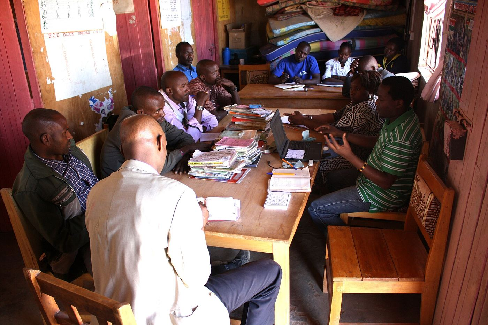
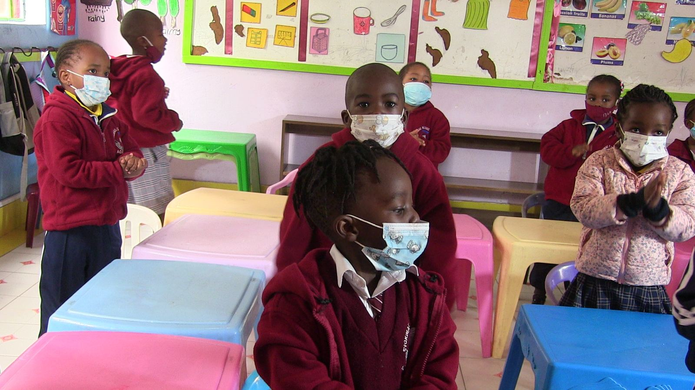

Sam chepkilot, CC BY-SA 4.0
Administrator
The whole school
- ✓Classes, learners, staff and guardian links
- ✓Reports and exports for every class
- ✓The audit log
Teachers take the register. Guardians confirm the journey either end. Each person sees only their own learners.
Fictional school. No real learner data.

Gracemutheum, CC BY-SA 4.0Everyone sees only what their role needs — enforced in the data layer, not hidden in the interface.

Sam chepkilot, CC BY-SA 4.0A guardian confirms the child left home. The register shows no arrival. That is the moment the system exists to catch — and it raises it before the register can be submitted.
Queen Asali, CC BY-SA 4.0| Information | Administrator | Teacher | Guardian |
|---|---|---|---|
| All learners | Full | Authorised | None |
| Attendance | Full | Record | Own child |
| Behaviour | Full | Record | Shared only |
| Reports | Full | Own classes | Own child |
| Other guardians | Authorised | None | None |
Time, and a comment if it helps.
Present, Late, Absent, Excused or School activity.
Not marked present? The guardian is told.
Confirmed, and the day is closed.
A structured scale that avoids judgemental labels, and records positives as readily as concerns — with the teacher named on every entry.
Absence, lateness, a missing register, a behaviour concern, a teacher reply, school announcements. Only ever to the linked guardian.